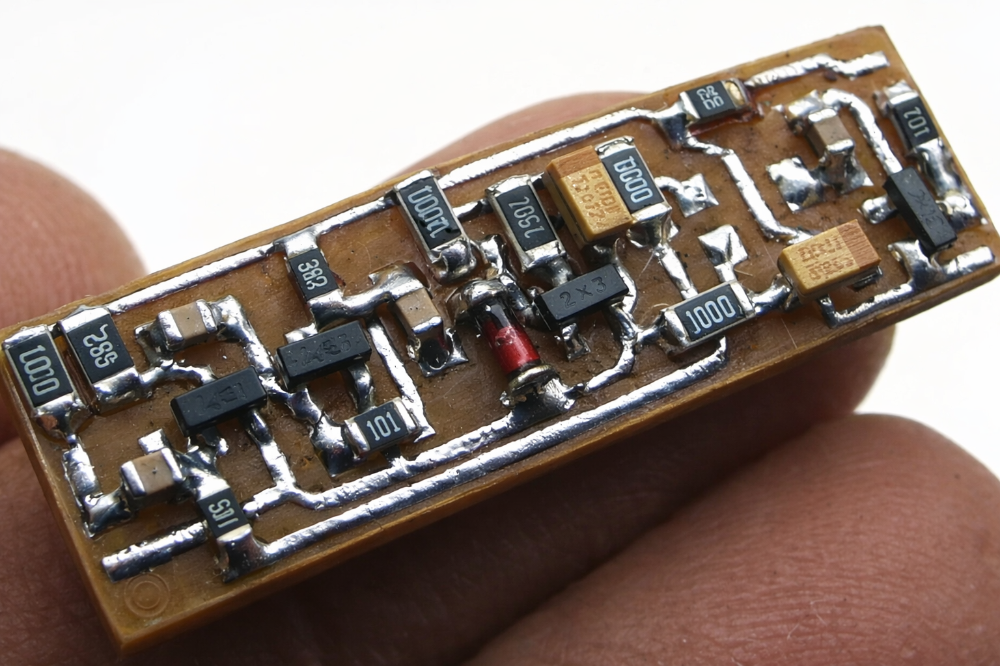

Transistor-Based Hearing Aid
Project Overview
This project presents a compact hearing aid implemented entirely with discrete transistor stages. The system combines multi-stage amplification with loop to maintain stable and comfortable audio output across a wide range of input signal levels.
The design emphasizes low-power operation, high sensitivity, and practical integration, operating from a single supply in the range of 0.8–4 V. A compact SMD version was later developed, reducing size by nearly 50%.
1. Hardware Design
The circuit consists of two preamplifier stages (VT1, VT2), followed by an AGC control stage (VT3), and a final output stage (VT4) driving a high-impedance earphone.
Key hardware elements:
- Two-stage BJT preamplifier for low-level microphone signals
- AGC loop using diode detection (VD1), control transistor (VT3), and RC network (C5, R8, R6)
- Output stage driving a 25–50 Ω high-impedance earphone
- Electret microphone with integrated internal biasing
- Single-cell supply (NiMH / Li-ion)

First SMD Prototype

Final SMD Version
2. Operation
The loop dynamically adjusts the amplifier gain using a feedback mechanism based on signal amplitude.
Operating principle:
- Quiet signal: Capacitor C5 charges through R8, keeping the control transistor (VT3) off and allowing maximum gain.
- Signal detection: The amplified signal is rectified by diode VD1, producing an envelope proportional to signal amplitude.
- Gain reduction: When the detected voltage exceeds ~0.6–0.7 V, VT3 turns on, discharging C5 through R6 and reducing the bias of the amplification stage → gain decreases.
- Recovery: When the input signal decreases, VT3 turns off and C5 slowly recharges, restoring gain over time (defined by the RC time constant).
This feedback mechanism provides automatic dynamic range compression, preventing loud signal distortion while maintaining sensitivity to weak signals.
3. Practical Considerations
- Earphone: Requires higher impedance (≈25–50 Ω); standard low-ohm earbuds are less suitable.
- Microphone: Electret type; correct polarity identification is required.
- Acoustic feedback: Maintain >3 cm separation between microphone and earphone.
- Power: Operates from 0.8–4 V with low current consumption.
4. Skills Demonstrated
- Analog Circuit Design: Multi-stage BJT amplifiers
- Automatic Gain Control: Detection and feedback bias control
- Design: SMD layout and miniaturization
- Low-Power Electronics: Efficient battery-powered design
- Audio Signal Processing: Amplification and dynamic range control
- Prototyping: SMD assembly and debugging
- System Integration: Electrical + acoustic considerations
- Testing: Functional validation and evaluation